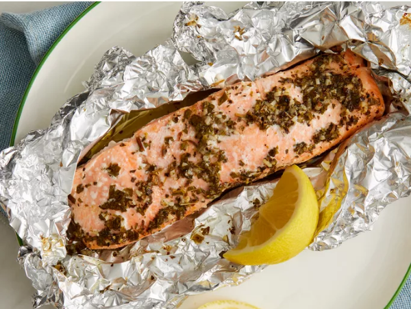

Baked Salmon

Description:
This baked salmon recipe cooks salmon fillets in foil packs with an olive oil,
lemon, and garlic marinade. This is a great recipe that's so easy to scale up
for feeding the family. My daughter who wouldn't ever dream of eating fish loves
this salmon dinner!
Ingredients:
- 6 tablespoons light olive oil
- 2 cloves garlic, minced
- 1 tablespoon lemon juice
- 1 tablespoon fresh parsley, chopped
- 1 teaspoon dried basil or to taste
- 1 teaspoon salt or to taste
- 1 teaspoon freshly ground black pepper or to taste
- 2 (6 ounce) fillets salmon
Directions:
- Whisk olive oil, garlic, lemon juice, parsley, basil, salt, and pepper together in a medium bowl.
- Arrange salmon fillets in a small glass or ceramic baking dish; pour marinade over salmon.
Cover and marinate in the refrigerator for about 1 hour, turning occasionally.
- Preheat the oven to 375 degrees F (190 degrees C).
- Transfer salmon fillets onto a large piece of aluminum foil.
Spoon marinade on top and fold up the foil to seal.
Place sealed foil packs on a baking sheet.
- Bake in preheated oven until fish flakes easily with a fork, about 20 to 25 minutes.
- Serve hot and enjoy!
Credits:
All credit goes to allrecipes
Home